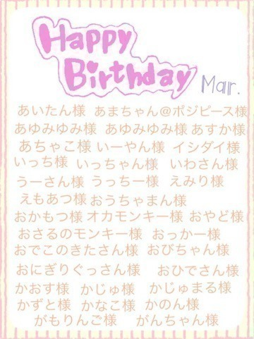
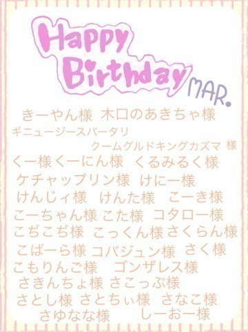
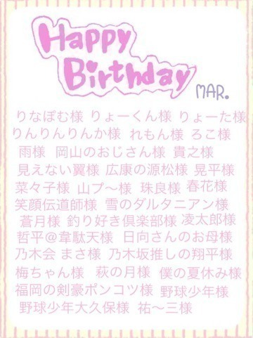
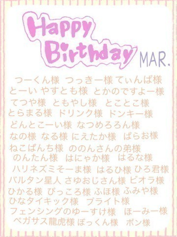
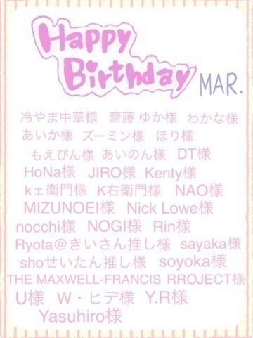
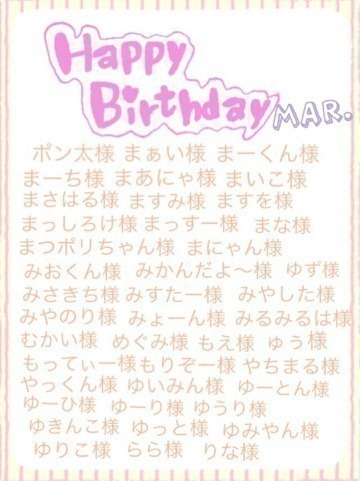

2015/0414Tueへたくそな言い訳
みなさまおはようございます♪
日奈子だよー٩(◦`꒳´◦)۶♡
ついに今日！
アンダーライブ 3rdシーズンがはじまります！！
緊張です！緊張と不安がいっぱいですが、楽しみもあります！
アンダーライブを大切に思ってるからこそ、こんなに緊張するんだなって思います！
アンダーライブ セカンドシーズンから今回もまたメンバーが変わって
新しいアンダーでのライブになります。
前回の方が良かったなど
マイナスなことを言われないように
一生懸命やります！
8公演を全力で駆け抜けて次の日寝たきり状態になるまでやります(｀・Д・´)
見に来てくださる方は
楽しみにしていてくださいっ！
個人的には表情をみてほしいです♡笑
ダンスには自信がありませんが
前回より成長したと言われるように
一生懸命踊ります！
そう！それから、
アンダーメンバー全員を
ヤングジャンプさんが特集して下さいました(｡・・｡)♡
表紙も裏表紙もアンダーメンバー！
中ページにも、たくさんアンダーメンバーがいるから、必見です♡
4月9日に発売されたので
是非みなさんみてください♪
中ページの写真のオフショット♪
裏表紙のオフショット♪
それから、6月18日から28日まである
乃木坂46のメンバーで行う舞台
「じょしらく」の出演メンバーに
選んで頂けました！
私が演じる役は
波浪浮亭木胡桃ちゃんという
天真爛漫な女の子です！
皆んなに可愛がられる素直な性格のキャラクターですが、内心では容赦なく毒づく攻撃的な一面もあり、ギャップのある
キャラクターなので、どんな立ち位置で舞台に参加していくのか楽しみです(｡・・｡)
オーディション当日は、
プリンシパルのことを思い出して
たくさん苦戦したので舞台に対して
恐怖があってオーディションに参加するのも怖かったけど、
オーディションはありのままの自分でいられ楽しめたので良かったです！
選ばれた瞬間は本当にびっくりしましたが同時に応援して下さるみなさんが喜んでくれる！と、思って嬉しかったです！
いつからお稽古がはじまるのかわかりませんが、波浪浮亭木胡桃ちゃんのキャラクターを壊すことなく、自分らしさもいれて演じられたらと思います！
みなさん見に来てください♪
きいちゃんとキグちゃんって似てる♪
遅くなりましたが、3月お誕生日の方！







お誕生日おめでとうございます！
4月お誕生日の方、このブログにコメントお願いします！
名古屋でのアルバム握手会、
京都、東京での個別握手会の話は
また次にします！！！
ブログ画像の枚数も決まっていて
あまり自分の画像やメンバーとの画像が載せられなくなってしまったので
今までよりも細かく短いブログになると思いますが、みなさんみてください(ノ_・。)
新うっちゃん
運命共同体
2015/04/14 10:30


コメント(821)
応援してます！ヾ(＠⌒ー⌒＠)ノ
見つけてよ
アンダラ頑張れーい٩( 'ω' )و
アンダーライブ見に行けないけど
頑張って！
応援してます！
行きたかったけどいい報告とか待ってるよ(灬ºωº灬)
どうもなおおです！
ブログ更新ありがとー
お昼休みにコメントしよっと！
またねー
アンダラがんばってね！！
いい評判聞けることを祈ってます、行けませんが（´；ω；｀)
ブログは更新頻度高くなるといいね(￣▽￣)笑
では！
アンダラがんばってね！
また行くときにブログに書くねー。
今は色んなことがたくさんだと思うけれど、全力で楽しんで！やっぱり北野は笑顔がいいね！
やっぱ可愛すぎます。
パンダみたいに白と黒で顔塗りつぶして見て！
絶対似合うから！
アンダラだと思う。
今回で観に行くの3回目やけど
あーひなこ進化したな、北野日奈子がんばってるやんって思わせてくれるLIVEにしてや！
大阪からまた見に行くから 待っててや！！
じょしらくは 多分見に行かへんと思うけど
せっかく選ばれたんやから 自分信じて全力でやるんやで！！ がんばっていこう！
きーくんより。
ライブは落ちてしまって行けないけど応援してるよ！
あとあと、ヤンジャンもしっかりと買いました！
じょしらく楽しみ♪もう申し込んだよ！
チームごのメンバーが俺得すぎて感動♪
だからじょしらくは見に行きたい！！あとヤンジャンまだ買ってないや買わなきゃ。
ちなみに19日誕生日だよ～(笑)
アンダーライブ期待してるよ！
後ろから三番目位で、きいちゃんタオル振ってるから気づいたら手振って欲しいなー！
8公演全力で駆け抜けろ！頑張れ！！
今日からアンダーライブが始まるね！！
初日の今日観に行くよ(*^^*)/
サイリウムとうちわで応援するからね♡
日奈子ちゃんの、表情、パフォーマンス目に焼き付けてきます(^ ^)w
じょしらくのオーディション合格おめでとう！！
こちらも当たったら観に行くね♡
4月誕生日だよー！！
4月21日です♪
きいちゃん勉強中の
みおふりぃ♪
でした(*^o^*)
きいちゃーん(･∀･)
アンダーライブいよいよ始まるね！
ステージで元気いっぱいのきいちゃんを楽しみにしとるね(*^O^*)
今回アンダーライブ行けないからじょしらくは絶対行くね！
もちろんチームごを見に行きます(^^)/
僕は司法試験までついに一か月を切ったよ！
年末の京都の握手会できいちゃんに応援してもらったから、絶対に合格してみせます！
だからきいちゃんも全力を尽くして、最高のアンダーライブにしてね！
見に行けないけど応援してる
きんちゃん♪
じょしらくみにいくよ
アンダラはがおーやって貰った記憶が一番だわ♡笑
ヤンジャンも買ってみたよ(^-^)/
めちゃ可愛いかった(^-^)/
まだ握手行った事ないから行ってみたいわー(>_<)
怪我なく元気に頑張ってね♡
応援してるー^_−☆
ひなこー
おめでとーう(*・ε・*)
いつか握手会行きたい〜( *´艸)( 艸｀*)
いつもがんばってて偉いね^o^
頑張り過ぎないで体も大切にね^ - ^
ｱﾝﾀﾞﾗ楽しみ～♪
16日にカフェ行ってから、ｱﾝﾀﾞﾗ行くぞー(*^ー^)ノ
東京の握手会も楽しかった！
いつもありがとうネ！
きいちゃん。ﾌｧｲﾃｨﾝ♪
アンダーライブ行けないけど、全力で頑張れー!!応援してるよ～
体調だけ気を付けてね！
ばいっっっ
早く会いたいなあって思ってる
今日のアンダラ5列目で見てるよ！
まあやも好きだけど、やっぱりきいちゃんも好き…
DDになっちゃって本当に申し訳ないけど…
応援してるからね
8日間無事に全ての公演終われる様に…
がんばれ！！
4月15日が誕生日です。
祝って下さい。
了解(^^ゞ
僕は木曜日に参加させていただきます！
飛鳥さんも見守ってくれるよね(^-^)
ガンバレー
行けないけど頑張ってね(ง ˙o˙)ว
じょしらくも応援してまーす(//∇//)\
嬉しい(^^)
ヤンジャン見たよ(￣∇￣)
アンダーメンバーの魅力が詰まってた(´ｰ｀)
今日から始まるアンダーライブの成功を祈ってるよ(^_^)b
みんなファイトo(^-^)o
4月16日誕生日だよー(*^^*)
襟@こじま。です。
分かりますか？
ブログ更新、待ってたよ！
握手会でも言ったけどアンダーライブ行けません。行きたかったな(;´д｀)
じょしらくは「ご」チームも申込みました。当たってくれ！
細かく短いブログになってしまうなら更新頻度を増やせば問題解決だよ(笑)
ちなみに5月が誕生日です！
聞いてない(笑)
4月生まれで、合法的にお酒が飲めるようになりましたー
コメントする